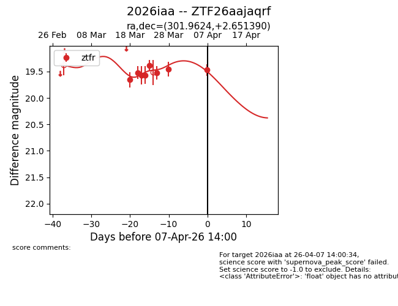
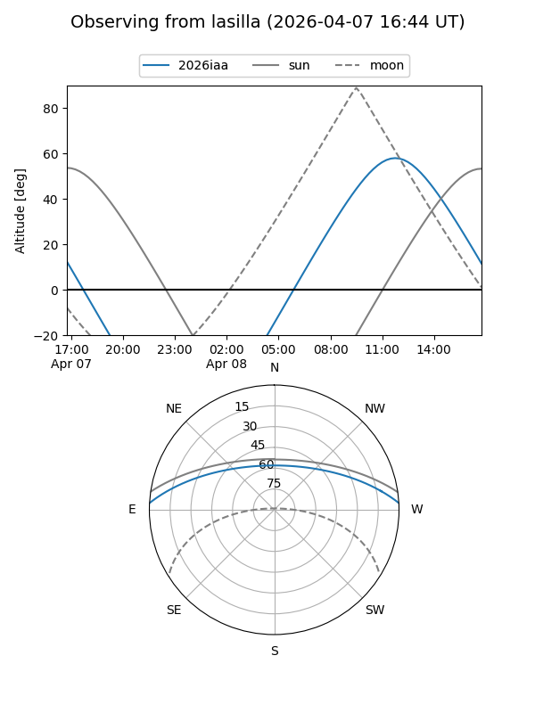
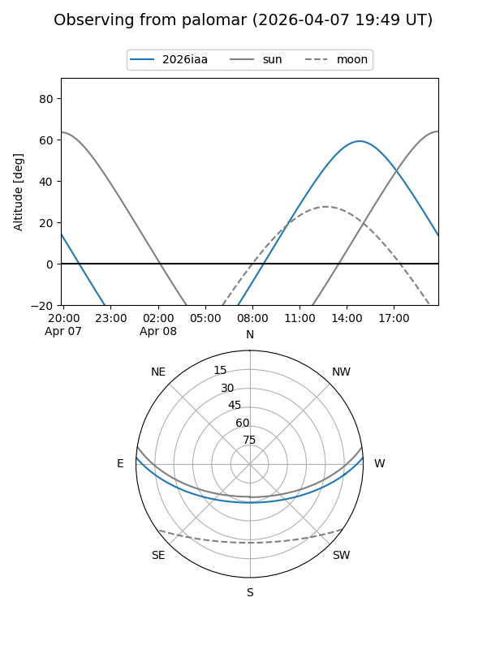
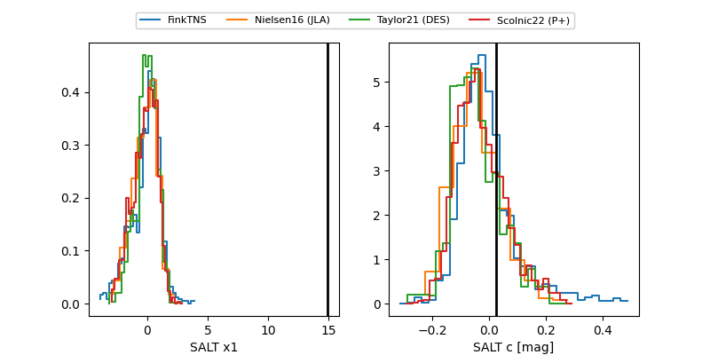

2026iaa
Target 2026iaa at 2026-04-07 14:04
Aliases and brokers:
FINK: link
Lasair: link
ALeRCE: link
TNS: link
YSE: link
alt names
ZTF26aajaqrf (ztf,fink_ztf)
2026iaa (tns,yse)
Coordinates:
equatorial (ra, dec) = 301.9624,+2.65139
equatorial (HMS+DMS) = 20:07:50.97,+02:39:05.00
galactic (l, b) = (44.3267,-15.65580)
Flags:
Photometry:
last ztfr=19.47
8 ztfr detections
Lightcurve

Visibility


Additional plots
